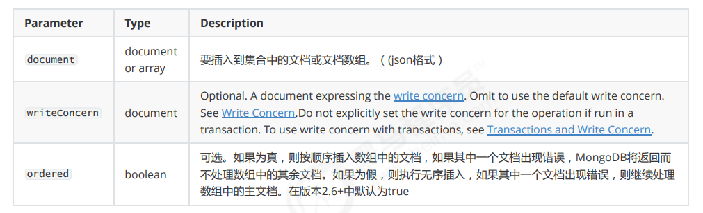
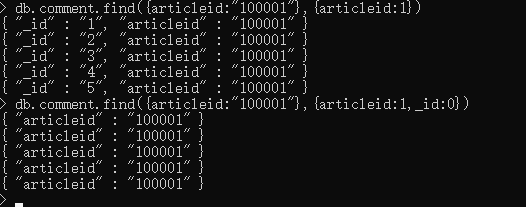
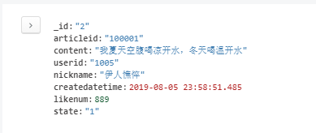

MongonDB 业务需求场景 可以解决三高问题（高并发读写，海量数据的高效率访问存储，对数据库的高可扩展性和可用性）
应用场景：
社交：朋友圈信息
游戏：用户装备、信息
物联网场景：设备汇报的日志信息
MongonDB简介
MongoDB是一个开源、高性能、无模式的文档型数据库，当初的设计就是用于简化开发和方便扩展，是NoSQL数据库产品中的一种。是最像关系型数据库（MySQL）的非关系型数据库。它支持的数据结构非常松散，是一种类似于 JSON 的 格式叫BSON，所以它既可以存储比较复杂的数据类型，又相当的灵活。
MongoDB中的记录是一个文档，它是一个由字段和值对（field:value）组成的数据结构。
MongoDB文档类似于JSON对象，即一个文档认 为就是一个对象。字段的数据类型是字符型，它的值除了使用基本的一些类型外，还可以包括其他文档、普通数组和文档数组。
与Mysql对比
mongonDB安装 官网下载：https://www.mongodb.com/download-center#community
windows版本 启动 命令行启动：
1 mongod --dbpath=..\data\db
配置文件启动：
编写配置文件
1 2 3 storage: #The directory where the mongod instance stores its data.Default Value is "\data\db" on Windows. dbPath: F:\mongonDb\software\mongodb-win32-x86_64-2008plus-ssl-4.0.12\data\db
启动：
1 2 3 mongod -f ../config/mongod.conf 或 mongod --config ../config/mongod.conf
连接 shell连接
1 2 3 mongo 或 mongo --host=127.0.0.1 --port=27017
此时不能关闭刚刚打开的命令行界面
compass图形化界面
官网下载：https://www.mongodb.com/download-center/v2/compass?initial=true
linux 1 2 3 4 5 6 7 ar -xvf mongodb-linux-x86_64-4.0.10.tgz mv mongodb-linux-x86_64-4.0.10 /usr/local/mongodb # 数据存储目录 mkdir -p /mongodb/single/data/db # 日志存储目录 mkdir -p /mongodb/single/log vi /mongodb/single/mongod.conf
配置文件如下：
1 2 3 4 5 6 7 8 9 10 11 12 13 14 15 16 17 18 19 20 21 22 23 24 25 systemLog: destination: file path: "/mongodb/single/log/mongod.log" logAppend: true storage: dbPath: "/mongodb/single/data/db" journal: enabled: true processManagement: fork: true net: bindIp: localhost,192.168.0.2 port: 27017
1 /usr/local/mongodb/bin/mongod -f /mongodb/single/mongod.conf
基本增删改查 以下表进行数据库讲解
创建数据库 创建articleDB数据库
首先远程连接数据库：
现在只放在内存，还没有放到磁盘，故show命令还只显示3个
admin： 从权限的角度来看，这是”root”数据库。要是将一个用户添加到这个数据库，这个用户自动继承所有数据库的权限。一些特 定的服务器端命令也只能从这个数据库运行，比如列出所有的数据库或者关闭服务器。
local: 这个数据永远不会被复制，可以用来存储限于本地单台服务器的任意集合
config: 当Mongo用于分片设置时，config数据库在内部使用，用于保存分片的相关信息。
删除：
创建集合（相当于表） 语法：
显示创建
1 db.createCollection(name)
隐式创建,后面会讲
删除集合
文档的插入和查询 1 2 3 4 5 6 7 db.collection.insert( < document or array of documents> ,{ writeConcern: < document> , ordered: < boolean > } )

1 2 3 db.comment.insert({"articleid":"100000","content":"今天天气真好，阳光明 媚","userid":"1001","nickname":"Rose","createdatetime":new Date (),"likenum":NumberInt(10 ),"state":null })
*
多个插入
语法
1 2 3 4 5 6 7 db.collection.insertMany( [ < document 1 > , < document 2 > , ... ], { writeConcern: < document> , ordered: < boolean > } )
1 2 db.comment.insertMany([ {"_id":"1","articleid":"100001","content":"我们不应该把清晨浪费在手机上，健康很重要，一杯温水幸福你我他。","userid":"1002","nickname":"相忘于江湖","createdatetime":new Date ("2019-08-05T22:08:15.522Z"),"likenum":NumberInt(1000 ),"state":"1"},{"_id":"2","articleid":"100001","content":"我夏天空腹喝凉开水，冬天喝温开水","userid":"1005","nickname":"伊人憔悴","createdatetime":new Date ("2019-08-05T23:58:51.485Z"),"likenum":NumberInt(888 ),"state":"1"},{"_id":"3","articleid":"100001","content":"我一直喝凉开水，冬天夏天都喝。","userid":"1004","nickname":"杰克船长","createdatetime":new Date ("2019-08-06T01:05:06.321Z"),"likenum":NumberInt(666 ),"state":"1"},{"_id":"4","articleid":"100001","content":"专家说不能空腹吃饭，影响健康。","userid":"1003","nickname":"凯撒","createdatetime":new Date ("2019-08-06T08:18:35.288Z"),"likenum":NumberInt(2000 ),"state":"1"},{"_id":"5","articleid":"100001","content":"研究表明，刚烧开的水千万不能喝，因为烫嘴。","userid":"1003","nickname":"凯撒","createdatetime":new Date ("2019-08-06T11:01:02.521Z"),"likenum":NumberInt(3000 ),"state":"1"}]);
基本查询
1 2 db.comment.find({articleid:"100001"}) db.comment.findOne({articleid:"100001"})
投影查询
查询结果只显示 _id、articleid:
1 db.comment.find({articleid:"100001"},{articleid:1 })

文档更新 1 2 3 4 5 6 7 8 9 10 11 12 13 14 db.collection.update(query, update , options) / / 或db.collection.update( < query> ,< update > ,{ upsert: < boolean > , multi: < boolean > , writeConcern: < document> , collation : < document> ,arrayFilters: [ < filterdocument1> , ... ], hint: < document| string> / / Available starting in MongoDB 4.2 } )
覆盖修改
1 db.comment.update({_id:"1"},{likenum:NumberInt(1001 )})
局部修改
1 db.comment.update({_id:"2"},{$set :{likenum:NumberInt(889 )}})
批量修改
1 2 3 4 / / 默认只修改第一条数据db.comment.update({userid:"1003"},{$set :{nickname:"凯撒2"}}) / / 修改所有符合条件的数据db.comment.update({userid:"1003"},{$set :{nickname:"凯撒大帝"}},{multi:true })
列值增长的修改
1 db.comment.update({_id:"3"},{$inc:{likenum:NumberInt(1 )}})
文档的删除 如果删除_id=1的记录，输入以下语句，不加条件则全部删除
1 db.comment.remove({_id:"1"})
分页查询 统计查询
1 db.collection.count (query, options)
列表查询
1 db.COLLECTION_NAME.find().limit(NUMBER).skip (NUMBER)
分页查询
需求：每页2个，第二页开始：跳过前两条数据，接着值显示3和4条数据
1 2 3 4 5 6 / / 第一页db.comment.find().skip (0 ).limit(2 ) / / 第二页db.comment.find().skip (2 ).limit(2 ) / / 第三页db.comment.find().skip (4 ).limit(2 )
排序查询
需求：对userid降序排列，并对访问量进行升序排列（升序：1）
1 db.comment.find().sort({userid:-1 ,likenum:1 })
其他查询 正则查询
我要查询评论内容包含“开水”的所有文档：
1 db.comment.find({content:/ 开水/ })
1 2 / / 我要查询评论内容包含“开水”的所有文档：db.comment.find({content:/ ^ 专家/ })
比较查询
查询评论点赞数量大于700的记录
1 db.comment.find({likenum:{$gt:NumberInt(700 )}})
包含查询
查询评论的集合中userid字段包含1003或1004的文档
1 2 3 db.comment.find({userid:{$in :["1003","1004"]}}) / / 不包含db.comment.find({userid:{$nin:["1003","1004"]}})
条件连接查询
查询评论集合中likenum大于等于700 并且小于2000的文档：
1 2 3 db.comment.find({$and :[{likenum:{$gte:NumberInt(700 )}},{likenum:{$lt:NumberInt(2000 )}}]}) / / 或and - > or
常用命令 1 2 3 4 5 6 7 8 9 10 11 12 13 14 15 选择切换数据库：use articledb 插入数据：db.comment.insert({bson数据}) 查询所有数据：db.comment.find(); 条件查询数据：db.comment.find({条件}) 查询符合条件的第一条记录：db.comment.findOne({条件}) 查询符合条件的前几条记录：db.comment.find({条件}).limit(条数) 查询符合条件的跳过的记录：db.comment.find({条件}).skip (条数) 修改数据：db.comment.update({条件},{修改后的数据}) 或db.comment.update({条件},{$set :{要修改部分的字段:数据}) 修改数据并自增某字段值：db.comment.update({条件},{$inc:{自增的字段:步进值}}) 删除数据：db.comment.remove({条件}) 统计查询：db.comment.count ({条件}) 模糊查询：db.comment.find({字段名:/ 正则表达式/ }) 条件比较运算：db.comment.find({字段名:{$gt:值}}) 包含查询：db.comment.find({字段名:{$in :[值1 ，值2 ]}})或db.comment.find({字段名:{$nin:[值1 ，值2 ]}}) 条件连接查询：db.comment.find({$and :[{条件1 },{条件2 }]})或db.comment.find({$or :[{条件1 },{条件2 }]})
索引 目的：提高效率
数据结构：b树（mqsql：b+）
单字段索引
多字段索引
其他索引
地理空间索引（Geospatial Index）、文本索引（Text Indexes）、哈希索引（Hashed Indexes）
索引管理操作 查看索引 1 db.collection.getIndexes()
1 2 3 4 5 6 7 8 9 10 11 > db.comment.getIndexes()[ { "v" : 2 , "key" : { "_id" : 1 }, "name" : "_id_", "ns" : "articledb.comment" / / 命名空间 } ]
创建索引 1 db.collection.createIndex(keys, options)
单字段索引示例：对 userid 字段建立索引：
1 db.comment.createIndex({userid:1 })
复合索引 1 db.comment.createIndex({userid:1 ,nickname:-1 })
索引移除 删除 comment 集合中 userid 字段上的升序索引：
1 db.comment.dropIndex({userid:1 })
删除所有（id不会被干掉）
1 db.collection.dropIndexes()
索引的使用 执行计划 查看根据userid查询数据的情况：
1 db.comment.find({userid:"1003"}).explain()
compass展示，collsan意味着没有用上索引
加上索引
1 db.comment.createIndex({userid:1 })
索引扫描后再抓取
涵盖查询 当查询条件和查询的投影仅包含索引字段时，MongoDB直接从索引返回结果，而不扫描任何文档或将文档带入内存。 这些覆盖的查询可以非常有效。类似回表
只查询索引集合，而不需要回到文档去查询。
案例介绍 需求分析
实现功能
基本增删改查API
根据文章id查询评论
评论点赞
技术选型
SpringDataMongoDB
创建maven工程，添加依赖，yml如下
1 2 3 4 5 6 7 8 9 10 11 <dependencies > <dependency > <groupId > org.springframework.boot</groupId > <artifactId > spring-boot-starter-test</artifactId > <scope > test</scope > </dependency > <dependency > <groupId > org.springframework.boot</groupId > <artifactId > spring-boot-starter-data-mongodb</artifactId > </dependency > </dependencies >
1 2 3 4 5 6 7 8 9 10 11 spring: data: mongodb: host: 192.168 .200 .128 database: articledb port: 27017
之后创建启动类
1 2 3 4 5 6 @SpringBootApplication public class ArticleApplication { public static void main (String[] args) { SpringApplication.run(ArticleApplication.class, args); } }
pojo编写 1 2 3 4 5 6 7 8 9 10 11 12 13 14 15 16 17 18 19 20 21 22 23 24 25 26 27 28 29 30 31 32 33 34 35 36 37 38 39 40 41 42 43 44 45 46 47 48 49 50 51 52 53 54 55 56 57 58 59 60 61 62 63 64 65 66 67 68 69 70 71 72 73 74 75 76 77 78 79 80 81 82 83 84 85 86 87 88 89 90 91 92 93 94 95 96 97 98 99 100 101 102 103 104 105 106 107 108 109 110 111 112 113 114 115 116 117 118 119 120 121 122 123 124 125 126 127 128 @Document(collection="comment") public class Comment implements Serializable { @Id private String id; @Field("content") private String content; private Date publishtime; @Indexed private String userid; private String nickname; private LocalDateTime createdatetime; private Integer likenum; private Integer replynum; private String state; private String parentid; private String articleid; public String getId () { return id; } public void setId (String id) { this .id = id; } public String getContent () { return content; } public void setContent (String content) { this .content = content; } public Date getPublishtime () { return publishtime; } public void setPublishtime (Date publishtime) { this .publishtime = publishtime; } public String getUserid () { return userid; } public void setUserid (String userid) { this .userid = userid; } public String getNickname () { return nickname; } public void setNickname (String nickname) { this .nickname = nickname; } public LocalDateTime getCreatedatetime () { return createdatetime; } public void setCreatedatetime (LocalDateTime createdatetime) { this .createdatetime = createdatetime; } public Integer getLikenum () { return likenum; } public void setLikenum (Integer likenum) { this .likenum = likenum; } public Integer getReplynum () { return replynum; } public void setReplynum (Integer replynum) { this .replynum = replynum; } public String getState () { return state; } public void setState (String state) { this .state = state; } public String getParentid () { return parentid; } public void setParentid (String parentid) { this .parentid = parentid; } public String getArticleid () { return articleid; } public void setArticleid (String articleid) { this .articleid = articleid; } @Override public String toString () { return "Comment{" + "id='" + id + '\'' + ", content='" + content + '\'' + ", publishtime=" + publishtime + ", userid='" + userid + '\'' + ", nickname='" + nickname + '\'' + ", createdatetime=" + createdatetime + ", likenum=" + likenum + ", replynum=" + replynum + ", state='" + state + '\'' + ", parentid='" + parentid + '\'' + ", articleid='" + articleid + '\'' + '}' ; } }
基本增删改查实现 创建dao
1 2 3 public interface CommentRepository extends MongoRepository <Comment,String> {}
创建service及实现类
1 2 3 4 5 6 7 8 9 10 11 12 13 14 15 16 17 18 19 20 21 22 23 24 25 26 27 28 29 30 31 32 33 34 35 36 37 38 39 40 41 42 43 44 45 46 47 48 49 50 51 @Service public class CommentServiceImpl implements CommentService { @Autowired private CommentRepository commentRepository; public void saveComment (Comment comment) { commentRepository.save(comment); } public void updateComment (Comment comment) { commentRepository.save(comment); } public void deleteCommentById (String id) { commentRepository.deleteById(id); } public List<Comment> findCommentList () { return commentRepository.findAll(); } public Comment findCommentById (String id) { return commentRepository.findById(id).get(); } }
进行测试
1 2 3 4 5 6 7 8 9 10 11 12 13 14 15 16 17 18 19 20 21 22 23 24 25 26 27 28 29 30 31 32 33 34 35 36 37 38 39 40 41 @RunWith(SpringRunner.class) @SpringBootTest public class CommentServiceTest { @Autowired private CommentService commentService; @Test public void testSaveComment () { Comment comment=new Comment (); comment.setArticleid("100000" ); comment.setContent("测试添加的数据" ); comment.setCreatedatetime(LocalDateTime.now()); comment.setUserid("1003" ); comment.setNickname("凯撒大帝" ); comment.setState("1" ); comment.setLikenum(0 ); comment.setReplynum(0 ); commentService.saveComment(comment); } @Test public void testFindAll () { List<Comment> list = commentService.findCommentList(); System.out.println(list); } @Test public void testFindCommentById () { Comment comment = commentService.findCommentById("5d6a27b81b8d374798cf0b41" ); System.out.println(comment); } }
根据上级ID查询文章评论的分页列表 涉及到条件查询和分页查询
在DAO创建新方法
1 Page<Comment> findByParentid (String parentid, Pageable pageable) ;
在service调用
1 2 3 4 @Override public Page<Comment> findCommentListByParentid (String parentid, int pageNum, int pageSize) { return commentRepository.findByParentid(parentid, PageRequest.of(pageNum-1 ,pageSize)); }
test测试
1 2 3 4 5 6 @Test public void testFindCommentListPageByParentid () {Page<Comment> pageResponse = commentService.findCommentListPageByParentid("3" , 1 , 2 ); System.out.println("----总记录数：" +pageResponse.getTotalElements()); System.out.println("----当前页数据：" +pageResponse.getContent()); }
评论点赞 简单实现可以先根据id查询该评论，再进行加1，再保存，随说简单，但两次IO操作十分影响效率
使用MongoTemplate
service进行如下修改
1 2 3 4 5 6 7 8 9 10 11 12 13 14 15 16 17 18 19 20 21 22 @Autowired private MongoTemplate mongoTemplate;public void updateCommentLikenum (String id) {Query query=Query.query(Criteria.where("_id" ).is(id)); Update update=new Update (); update.inc("likenum" ); mongoTemplate.updateFirst(query,update,"comment" ); }
进行测试
1 2 3 4 5 6 7 8 @Test public void testUpdateCommentLikenum () {commentService.updateCommentLikenum("3" ); }

更新之后
集群与安全 副本集 简单说就是当一个服务器挂了，通过复制的数据保证不丢失，既通过在不同数据库服务器上提供多个数据副本，复制可提供一定级别 的容错功能，以防止丢失单个数据库服务器。类似于mysql的主从复制，但是mysql的区分主和从，而mongodb不去区分主和从。
主要成员（Primary）：主要接收所有写操作。就是主节点。
副本成员（Replicate）：从主节点通过复制操作以维护相同的数据集，即备份数据，不可写操作，但可 以读操作（但需要配置）。是默认的一种从节点类型。
仲裁者（Arbiter）：不保留任何数据的副本，只具有投票选举作用。当然也可以将仲裁服务器维护为副 本集的一部分，即副本成员同时也可以是仲裁者。也是一种从节点类型。
注意事项：
如果您的副本集具有偶数个成员，请添加仲裁者以获得主要选举中的“大多数”投票。 仲裁者不需要专用硬件。
仲裁者将永远是仲裁者，而主要人员可能会退出并成为次要人员，而次要人员可能成为选举期间的主要人员。
如果你的副本+主节点的个数是偶数，建议加一个仲裁者，形成奇数，容易满足大多数的投票。
如果你的副本+主节点的个数是奇数，可以不加仲裁者。